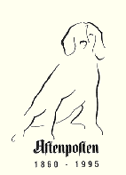

AFTENPOSTEN

Aftenposten ble grunnlagt 14. mai 1860, under navnet Christiania Adresseblad. Året etter kom navnet Aftenposten.
Fra 1885 har avisen hatt to daglige utgaver, og søndagsutgave fra 1990. I dag er Aftenposten Norges desidert største abonnementsavis, og en av de få aviser i verden med to utgaver.
1330 ansatte i Aftenposten strekker seg langt for at du skal få en best mulig avis hver dag. Alt som står i Aftenposten er grundig og seriøst gjennomarbeidet, og våre moderne produksjonsmetoder sikrer deg en avis med høy kvalitet.
I tillegg jobber 3000 medarbeidere i vårt ytre distribusjonsapparat under hardt tidspress hver dag, og gir seg ikke før Aftenposten er trygt fremme hos deg.
Slik lages Aftenposten
[Innhold] [Info] [Aftenposten hjemmeside] [Til Ung hovedside]